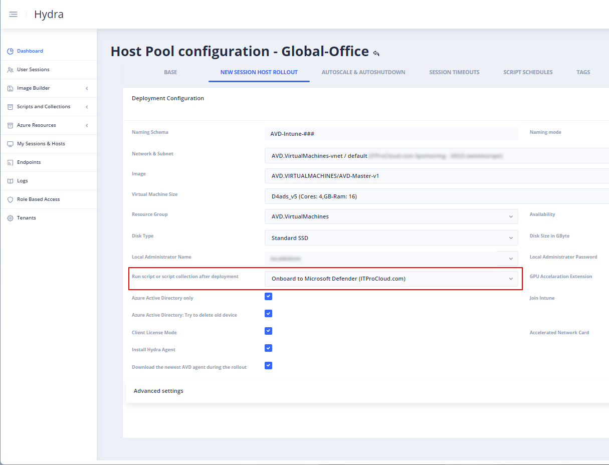
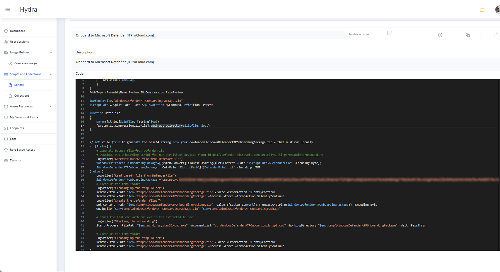

Onboarding session hosts to Defender is very important for security reasons. Microsoft has documented the way to onboard these devices in different scenarios here: https://learn.microsoft.com/en-us/microsoft-365/security/defender-endpoint/configure-endpoints-vdi
While I often work with Hydra for Azure Virtual Desktop and also have some AAD native deployment, I decided to prepare an easy script to onboard this device automatically after the rollout. The script is generic, so it can also be used with other automation.
To start, we need the VDI onboarding script for non-persistent devices from https://security.microsoft.com/securitysettings/endpoints/onboarding - Make sure to download the right package.
To install Defender without the need to store the package (zip file) to share, we can encode the package to a base64 encoded string. After that, we can grab the string from the text file WindowsDefenderATPOnboardingPackage.zip.txt and put it into quotes in line 30.
Step-by-step:
- Save the PowerShell script to your local disk
- Change $false into $true in line 22
- Download the onboarding script and store it in the same folder
- Run the PowerShell script
- Open the text file WindowsDefenderATPOnboardingPackage.zip.txt and put it into quotes in line 30
The script can then be run after the rollout to join the device to Defender. In Hydra, you can add the script as a new script into Scripts and Collections (with your onboarding script encoded in line 25 and $false in line 22).

Add the script to the Deployment Configuration -> Run script or script collection after deployment:

The next device is automatically onboarded to Defender.
The script:
# Script to prepare and onboard AVD non-persistent hosts to Microsoft Defender
# test if fuction LogWriter available
if (!(Test-Path function:LogWriter)) {
function LogWriter($message) {
Write-Host $message
}
}
Add-Type -AssemblyName System.IO.Compression.FileSystem
$DefenderFile="WindowsDefenderATPOnboardingPackage.zip"
$ScriptPath = Split-Path -Path $MyInvocation.MyCommand.Definition -Parent
function UnzipFile
{
param([string]$zipfile, [string]$out)
[System.IO.Compression.ZipFile]::ExtractToDirectory($zipfile, $out)
}
# set it to $true to generate the base64 string from your dowloaded WindowsDefenderATPOnboardingPackage.zip - that must run locally
if ($false) {
# Generate base64 file fron DefenderFile
# Download VDI onboarding script for non-persistent devices from: https://defender.microsoft.com/securitysettings/endpoints/onboarding
LogWriter("Generate base64 file fron DefenderFile")
$WindowsDefenderATPOnboardingPackage=[System.Convert]::ToBase64String((Get-Content -Path "$ScriptPath\$DefenderFile" -Encoding Byte))
$WindowsDefenderATPOnboardingPackage | Out-File "$ScriptPath\$($DefenderFile).txt" -Encoding UTF8
} else {
LogWriter("Read base64 file fron DefenderFile")
$WindowsDefenderATPOnboardingPackage ="<put your base64 encoded string here>"
# Clean up the temp folder
LogWriter("Cleaning up the temp folder")
Remove-Item -Path "$env:temp\WindowsDefenderATPOnboardingPackage.zip" -Force -ErrorAction SilentlyContinue
Remove-Item -Path "$env:temp\WindowsDefenderATPOnboardingPackage" -Recurse -Force -ErrorAction SilentlyContinue
LogWriter("Create the Defender files")
Set-Content -Path "$env:temp\WindowsDefenderATPOnboardingPackage.zip" -Value ([System.Convert]::FromBase64String($WindowsDefenderATPOnboardingPackage)) -Encoding Byte
UnzipFile "$env:temp\WindowsDefenderATPOnboardingPackage.zip" "$env:temp\WindowsDefenderATPOnboardingPackage"
# start the test.cmd with cmd.exe in the extracted folder
LogWriter("Starting the onboarding")
Start-Process -FilePath "$env:windir\system32\cmd.exe" -ArgumentList "/c WindowsDefenderATPOnboardingScript.cmd" -WorkingDirectory "$env:temp\WindowsDefenderATPOnboardingPackage" -Wait -PassThru
# Clean up the temp folder
LogWriter("Cleaning up the temp folder")
Remove-Item -Path "$env:temp\WindowsDefenderATPOnboardingPackage.zip" -Force -ErrorAction SilentlyContinue
Remove-Item -Path "$env:temp\WindowsDefenderATPOnboardingPackage" -Recurse -Force -ErrorAction SilentlyContinue
}